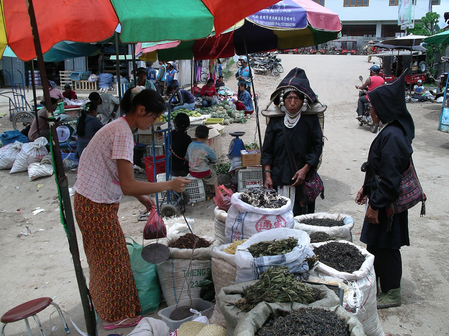
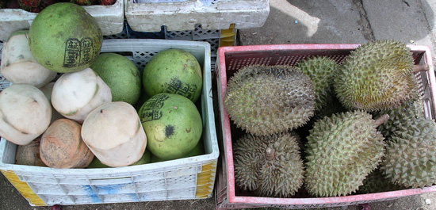
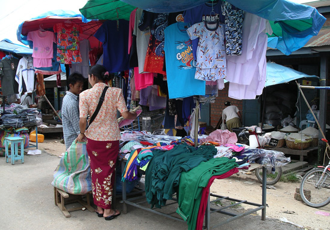
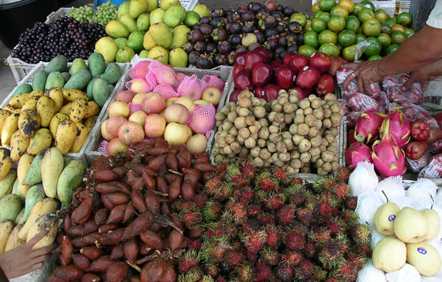
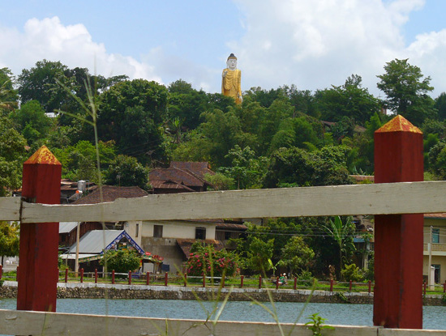
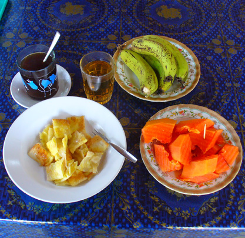
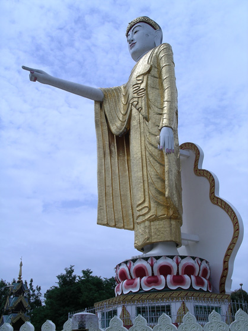
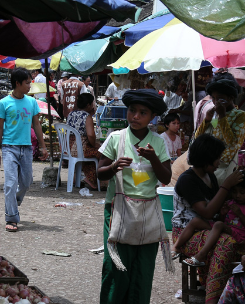
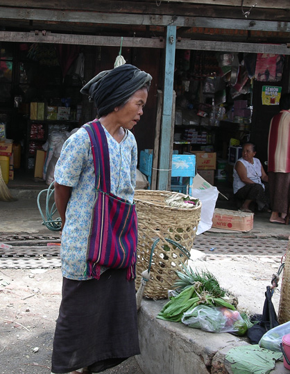
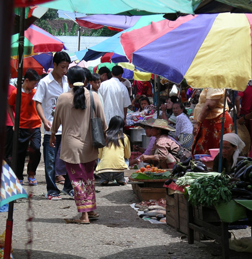

Myanmar Trav-E-Logs ©
Keng Tung Main Market
|  | |
| back: Keng Tung Morning Market | Most goods are weighed with balance scales. |
================================= Three types of entries are available for tourist travel into Eastern Shan State. The simplest is a Day Pass, obtained at the border, which permits one to travel only in the uninteresting border-town of Tachileik. Also available at the border is a 2-week Travel Document that permits travel all the way to the Chinese border at Mong La/Ruili. The traveler surrenders his passport in return for travel papers, which are passed between bus or taxi driver and hotel or guesthouse owner. You are in their charge -- screw up and they are reprimanded. Upon exit, your passport is returned to you. The final option is the "normal" 30-day visa purchased at a Myanmar Consulate prior to your arrival at the border. It also permits you to fly between Keng Tung and the central portion of the country where Inle Lake, Mandalay, Bagan, and Yangoon are located. =================================
Mid-June 2006
|
One of the nice ways to see a new region is to rent a bicycle and start peddling. In town, out of town, across town, it does not matter. Getting lost is even better, though having a map, however crude, is always a good plan. When maps are not available, carrying a business card of your hotel or guesthouse is really important, as often locals can not understand the traveler's pronunciation of place names and streets. One gets the impression that maps and street names are really a western concept, as the locals give instructions like "by the big pagoda", or "near the grain store." After the delicious breakfast at Harry's Guest House, decided to rent a bike and peddle up to the other structure that dominates the skyline in much of Keng Tung: a standing Buddha on a hill that juts into two main parts of town. From there, decided to go down the "other" side, which put me into the Main Market. Keng Tung's Main Market has a covered section and an open-air section. Like most markets in Southeast Asia, photography is difficult in these dark, covered structures due to lack of light. Because sticking a camera in someone's face is never very friendly, I'll sometimes set it on a tripod and look the other way while shooting. The down side of this is many pictures of people's backside. Photos, clockwise from the top: Breakfast Included; 'Build a Great Town Here'; Drinks for immediate consumption are poured into plastic bags and served with a straw; Contemplation; Umbrellas keep the Sun off of merchants; Keng Tung's Standing Buddha points towards town center; Mangostein, Lanzones, Dragonfruit, Salak, and Rambutan among more familiar fruit; Negotiation is still possible; Coconuts, Pomelo, and Durian.    Ciao! Bill ------------------------------ Questions? Email me at the juno.com address dancer2SEAsia. |
     |
"Travel is like a book. Those who don't are stuck on the first page.
| next: Minority Tribe Trekking 1 |
| back: Keng Tung Morning Market |